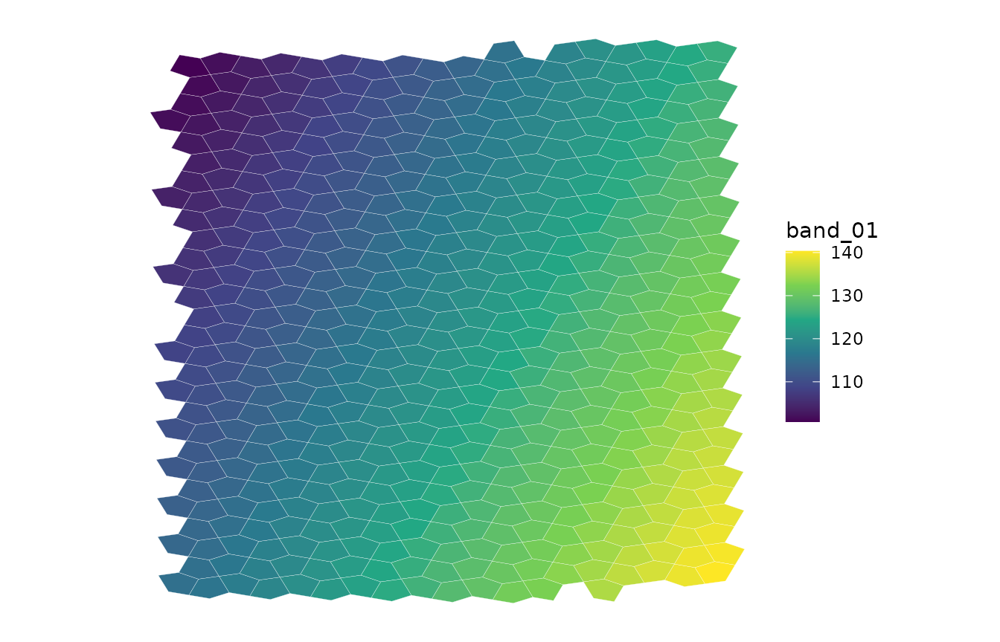
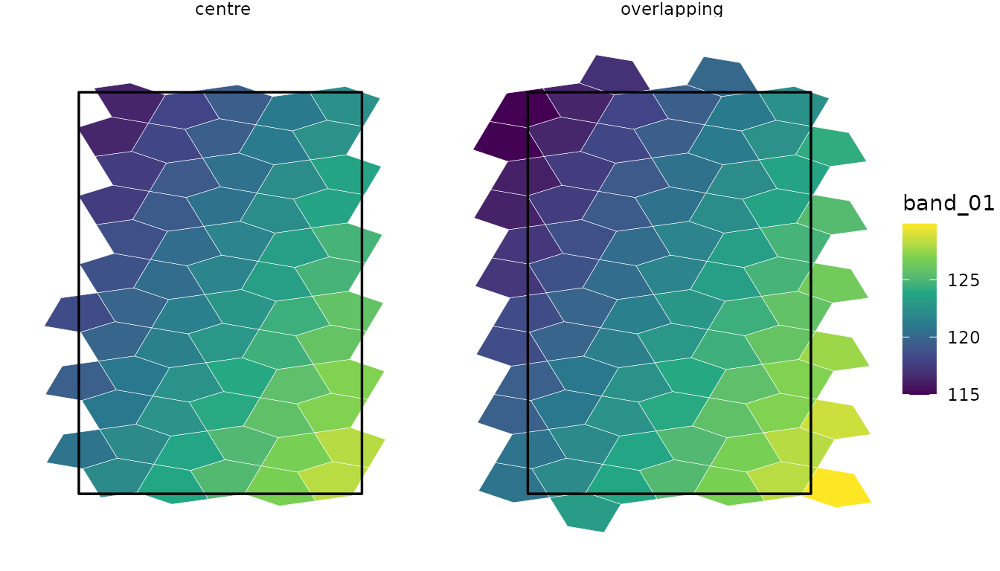
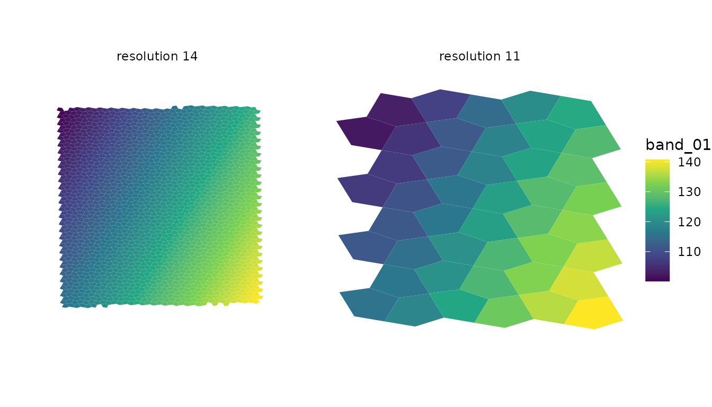

a5px turns raster pixels into statistics over A5 cells, the equal-area pentagons of a discrete global grid. It reads GeoTIFF and Cloud-Optimised GeoTIFF (COG) files from disk or a cloud store, assigns each pixel to a cell, and returns one row per cell. This article walks through the readers and their options. The examples run on small rasters shipped with the package; those that need the network are shown but not run.
Reading a raster
a5_raster_info() describes a file without reading its
pixels: size, data type, block grid, overviews, CRS and its envelope in
WGS 84.
cog <- system.file("extdata", "overview_cog.tif", package = "a5px")
info <- a5_raster_info(cog)
info[c("width", "height", "dtype", "crs", "block", "bbox")]
#> $width
#> [1] 512
#>
#> $height
#> [1] 512
#>
#> $dtype
#> [1] "float32"
#>
#> $crs
#> [1] "EPSG:32633"
#>
#> $block
#> [1] 256 256
#>
#> $bbox
#> [1] 13.72488 45.14639 13.92331 45.28664a5_read_raster() aggregates it into cells at one A5
resolution. Each row is a cell, keyed by an a5R::a5_cell,
with one column per band:
cells <- a5_read_raster(cog, resolution = 13L)
cells
#> # A tibble: 516 × 2
#> cell band_01
#> <a5_cell> <dbl>
#> 1 514456a600000000 138.
#> 2 514456aa00000000 137.
#> 3 514456ae00000000 138.
#> 4 514456b200000000 139.
#> 5 514473c600000000 139.
#> 6 514473e600000000 140.
#> 7 514473ea00000000 140.
#> 8 514473ee00000000 139.
#> 9 514473f200000000 138.
#> 10 514473f600000000 139.
#> # ℹ 506 more rowsa5view draws the
cells as a ggplot2 layer, geom_a5(), which takes the cell
column as its cell aesthetic:
library(ggplot2)
library(a5view)
ggplot(cells, aes(cell = cell, fill = band_01)) +
geom_a5(colour = "white", linewidth = 0.05) +
scale_fill_viridis_c() +
theme_void()
The resolution sets the cell size. a5R::a5_cell_area()
gives the area in square metres: a resolution-13 cell, about 0.5 km^2,
holds some 560 of this raster’s 30 m pixels.
a5R::a5_cell_area(c(10L, 13L, 16L, 18L))
#> Units: [m^2]
#> [1] 3.242910e+07 5.067047e+05 7.917261e+03 4.948288e+02Resolutions run from 0 to 29. Resolution 30 is refused for now: the a5 crate returns resolution-29 cells for some points at 30.
Three outputs
The three readers share one engine and differ in what they return:
-
a5_read_raster()returns a tibble, one numeric column per band and statistic. -
a5_read_raster_arrow()returns an Arrow table, with the same columns or, withas_vector = TRUE, one list column per statistic holding every band. -
a5_raster_to_parquet()writes a Parquet file straight from Rust, which avoids holding the result in R.
tab <- a5_read_raster_arrow(cog, resolution = 13L)
tab
#> Table
#> 516 rows x 2 columns
#> $cell <uint64>
#> $band_01 <double>
#>
#> See $metadata for additional Schema metadata
pq <- tempfile(fileext = ".parquet")
a5_raster_to_parquet(cog, pq, resolution = 13L, compression = "zstd")
arrow::read_parquet(pq, as_data_frame = FALSE)
#> Table
#> 516 rows x 2 columns
#> $cell <uint64 not null>
#> $band_01 <double not null>
#>
#> See $metadata for additional Schema metadataa5px_write_parquet() writes a tibble or Arrow table from
the first two. The Arrow and Parquet outputs record the read’s
provenance in their metadata: the A5 index version, the a5 crate and
a5px versions, the sampling mode, the decode, whether overviews were
allowed and any nodata override.
Statistics
stat takes one or more of "mean",
"sum", "count", "min",
"max", "var", "sd",
"majority" and "fractions", all computed in
one pass. "npix" adds the number of pixels in each cell
with any valid band.
a5_read_raster(cog, resolution = 13L, stat = c("mean", "sd", "count", "npix"))
#> # A tibble: 524 × 5
#> cell band_01_mean band_01_sd band_01_count npix
#> <a5_cell> <dbl> <dbl> <dbl> <dbl>
#> 1 514456a600000000 138. 0.225 113 113
#> 2 514456aa00000000 137. 0.454 560 560
#> 3 514456ae00000000 138. 0.307 313 313
#> 4 514456b200000000 139. 0.224 112 112
#> 5 514473c600000000 139. 0.466 438 438
#> 6 514473e600000000 140. 0.219 110 110
#> 7 514473ea00000000 140. 0.292 283 283
#> 8 514473ee00000000 139. 0.454 564 564
#> 9 514473f200000000 138. 0.502 560 560
#> 10 514473f600000000 139. 0.306 312 312
#> # ℹ 514 more rowssum and count let partial results be merged
without re-reading the raster, as in chunked
reads.
For integer class labels such as land cover, "majority"
gives each cell’s most common class and "fractions" the
share of each class, as a list column:
a5_read_raster(landcover, resolution = 12L, stat = c("majority", "fractions"))Pixels equal to the file’s nodata value, and NaN pixels, are missing:
they enter no statistic. src_nodata overrides the file’s
value.
Sampling modes
mode controls how pixels map to cells.
-
"forward"(the default) assigns each pixel to the cell that contains its centre. It suits cells several pixels across. -
"overlay"splits each pixel between the cells it overlaps, in proportion to area, estimated by supersampling the pixel (subsamples). Means become area-weighted andsumconserves totals, such as population counts. Only pixels on a cell boundary pay for the supersampling. -
"centroid"samples the raster at each cell’s centre, for cells smaller than pixels.interppicks the kernel:"nearest"(the default),"bilinear","bicubic"or"lanczos".
a5_read_raster(cog, resolution = 11L, mode = "overlay", stat = c("mean", "sum"))
#> # A tibble: 44 × 3
#> cell band_01_mean band_01_sum
#> <a5_cell> <dbl> <dbl>
#> 1 514456a000000000 137. 206570.
#> 2 514473a000000000 141. 1690.
#> 3 514473e000000000 138. 646628.
#> 4 5144742000000000 136. 438124.
#> 5 514474e000000000 131. 184203.
#> 6 5145082000000000 107. 755635.
#> 7 5145086000000000 111. 991566.
#> 8 514508a000000000 116. 1046736.
#> 9 514508e000000000 111. 790444.
#> 10 5145092000000000 111. 115632.
#> # ℹ 34 more rows
a5_read_raster(cog, resolution = 18L, mode = "centroid", interp = "bilinear",
bbox = c(13.80, 45.20, 13.81, 45.21))
#> # A tibble: 1,766 × 2
#> cell band_01
#> <a5_cell> <dbl>
#> 1 5145089800800000 119.
#> 2 5145089802800000 118.
#> 3 5145089803800000 118.
#> 4 5145089806800000 118.
#> 5 5145089808800000 118.
#> 6 5145089809800000 118.
#> 7 514508980a800000 118.
#> 8 514508980b800000 118.
#> 9 514508980c800000 118.
#> 10 514508980d800000 118.
#> # ℹ 1,756 more rowsUnder "overlay", majority and
fractions are area-weighted too.
Overviews
With stat = "mean" in forward or overlay mode, a5px
reads the coarsest COG overview that still has several pixels per cell,
which cuts the download for coarse resolutions. Other statistics, such
as sum, count or max, always read
full-resolution pixels, since an overview changes them.
use_overviews = FALSE turns this off.
Subsets
Bounding box
bbox reads only the pixels inside a WGS 84 box,
c(xmin, ymin, xmax, ymax). A box with
xmin > xmax crosses the antimeridian.
b <- info$bbox
west <- c(b[1], b[2], (b[1] + b[3]) / 2, b[4])
a5_read_raster(cog, resolution = 13L, bbox = west)
#> # A tibble: 270 × 2
#> cell band_01
#> <a5_cell> <dbl>
#> 1 5145080200000000 104.
#> 2 5145080600000000 105.
#> 3 5145080a00000000 106.
#> 4 5145080e00000000 105.
#> 5 5145081200000000 106.
#> 6 5145081600000000 107.
#> 7 5145081a00000000 107.
#> 8 5145081e00000000 108.
#> 9 5145082200000000 109.
#> 10 5145082600000000 110.
#> # ℹ 260 more rowsAreas of interest
aoi keeps the A5 cells of a polygon, selected as by
a5R::a5_polygon_to_cells():
containment = "centre" keeps the cells whose centre is
inside, "overlapping" every cell the polygon touches.
Selection is by cell, so an included cell gets all its valid pixels,
including any outside the polygon. aoi takes what
a5R::a5_polygon_to_cells() does: sf or
sfc objects, wk geometries, WKT, a terra
SpatVector or a lon/lat matrix.
aoi <- wk::rct(13.80, 45.18, 13.86, 45.24, crs = wk::wk_crs_longlat())
a5_read_raster(cog, resolution = 13L, aoi = aoi, containment = "overlapping")
#> # A tibble: 81 × 2
#> cell band_01
#> <a5_cell> <dbl>
#> 1 5145088e00000000 116.
#> 2 5145089200000000 117.
#> 3 5145089600000000 119.
#> 4 5145089a00000000 117.
#> 5 51450e6e00000000 121.
#> 6 51450e8200000000 123.
#> 7 51450e8600000000 122.
#> 8 51450e8a00000000 121.
#> 9 51450e8e00000000 122.
#> 10 51450e9200000000 121.
#> # ℹ 71 more rowsThe two rules side by side, with the AOI outlined.
"overlapping" adds the cells the edge cuts, and each keeps
its pixels outside the polygon:
by_rule <- lapply(c("centre", "overlapping"), function(rule) {
out <- a5_read_raster(cog, resolution = 13L, aoi = aoi, containment = rule)
out$containment <- rule
out
})
ggplot(vctrs::vec_rbind(!!!by_rule)) +
geom_a5(aes(cell = cell, fill = band_01), colour = "white", linewidth = 0.1) +
geom_sf(data = sf::st_as_sf(aoi), fill = NA, colour = "black", linewidth = 0.6) +
facet_wrap(~containment) +
scale_fill_viridis_c() +
theme_void()
In centroid mode the AOI’s cells are sampled directly, so the polygon is covered without gaps.
Chunked reads
A read holds every cell it touches in memory until it finishes, so
very large reads are best split by bbox.
bbox_align = "block" takes the COG blocks whose origin lies
in each box, so a set of boxes that tiles the raster fetches every block
once, and sum and count add up exactly across
chunks:
east <- c((b[1] + b[3]) / 2, b[2], b[3], b[4])
parts <- lapply(list(west, east), function(bb) {
a5_read_raster(cog, resolution = 13L, bbox = bb, bbox_align = "block",
stat = c("sum", "count"), use_overviews = FALSE)
})
whole <- a5_read_raster(cog, resolution = 13L, stat = c("sum", "count"),
use_overviews = FALSE)
c(chunked = sum(sapply(parts, function(p) sum(p[[3]]))), whole = sum(whole[[3]]))
#> chunked whole
#> 262144 262144Remote chunks reuse the header and blocks they share through a session cache (see Remote sources).
Several files
src takes several files, read in one pass. How they
combine depends on what they hold:
# bands stored one file each: one column per file, named by names(src)
a5_read_raster(c(red = red_url, nir = nir_url), 14L, separate = TRUE)
# adjacent tiles, or repeat captures, of one product: pixels pooled
a5_read_raster(c(tile_a, tile_b), 14L)
# a statistic per capture, then reduced across captures in each cell
a5_read_raster(captures, 14L, composite = "median")
a5_read_raster(captures, 14L, composite = "count") # captures per cellPooled files must have the same bands and pixel size. Every valid
pixel enters its cell once, so cells on a seam between tiles combine
exactly, and where files overlap every capture counts.
composite computes stat for each file and
reduces across files, weighting each by its valid pixels in the cell.
Single-band files without band descriptions look alike to the pooling
check, so set separate = TRUE for files that hold different
bands.
Decoding stored values
scoff = TRUE applies the scale and offset each band
declares, turning stored integers into physical units:
sc <- system.file("extdata", "scoff_int16.tif", package = "a5px")
a5_raster_info(sc)[c("scale", "offset")]
#> $scale
#> [1] 0.01 0.50
#>
#> $offset
#> [1] 0 10
a5_read_raster(sc, resolution = 12L, scoff = TRUE)
#> # A tibble: 136 × 3
#> cell rh98 band_02
#> <a5_cell> <dbl> <dbl>
#> 1 514eaab800000000 5.00 -231.
#> 2 514eaac800000000 4.26 -194.
#> 3 514eaaf800000000 3.50 -157.
#> 4 514eab0800000000 2.75 -118.
#> 5 514eab3800000000 1.99 -80.7
#> 6 514eabe800000000 1.24 -43
#> 7 6ab3f20800000000 4.97 495
#> 8 6ab3f21800000000 5.38 489.
#> 9 6ab3f23800000000 5.63 462.
#> 10 6ab3f24800000000 6.13 452.
#> # ℹ 126 more rowsA linear decode gives the same result before or after averaging. A
quantized code does not: the mean of codes is not the code of the mean.
dequant decodes each pixel before it enters the statistics.
It takes any vectorised R function of the integer codes; a5px evaluates
it once per possible code and passes the table to Rust, so the source
must be an integer type of 16 bits or fewer. dequant_aef
decodes Alpha Earth Foundations embeddings,
sign(x) * (x / 127.5)^2:
aef <- system.file("extdata", "aef_int8.tif", package = "a5px")
a5_read_raster(aef, resolution = 13L, dequant = dequant_aef)
#> # A tibble: 194 × 3
#> cell A01 A02
#> <a5_cell> <dbl> <dbl>
#> 1 5160d62a00000000 -0.632 -0.134
#> 2 5160d62e00000000 -0.308 -0.190
#> 3 5160d63200000000 -0.300 -0.0190
#> 4 5160d63600000000 -0.0223 0.0934
#> 5 5160d68200000000 0.0554 0.272
#> 6 5160d68600000000 0.0655 -0.249
#> 7 5160d68a00000000 0.207 -0.142
#> 8 5160d68e00000000 -0.00866 -0.359
#> 9 5160d69200000000 -0.0793 0.303
#> 10 5160d69600000000 -0.549 0.00855
#> # ℹ 184 more rowsA function that returns NA for some codes marks those
pixels missing. Setting dequant also turns
use_overviews off, since overviews built by averaging codes
decode wrongly.
Coarser resolutions
a5_aggregate() summarises a result at a coarser
resolution without re-reading the raster. Each cell goes to the coarse
cell containing its centre, and means are weighted by each cell’s pixel
count:
fine <- a5_read_raster(cog, resolution = 14L, stat = c("mean", "npix"))
coarse <- a5_aggregate(fine, resolution = 11L)
coarse
#> # A tibble: 44 × 3
#> cell band_01 npix
#> <a5_cell> <dbl> <dbl>
#> 1 514456a000000000 137. 1282
#> 2 514473a000000000 141. 39
#> 3 514473e000000000 138. 4909
#> 4 5144742000000000 136. 3264
#> 5 514474e000000000 131. 1391
#> 6 5145082000000000 107. 7260
#> 7 5145086000000000 111. 8694
#> 8 514508a000000000 116. 8717
#> 9 514508e000000000 111. 7279
#> 10 5145092000000000 111. 1130
#> # ℹ 34 more rowsCoarse cells along the raster’s edge extend past it, and their means cover only the part with pixels:
both <- vctrs::vec_rbind(
tibble::tibble(cell = fine$cell, band_01 = fine$band_01, res = "resolution 14"),
tibble::tibble(cell = coarse$cell, band_01 = coarse$band_01, res = "resolution 11")
)
both$res <- factor(both$res, levels = c("resolution 14", "resolution 11"))
ggplot(both, aes(cell = cell, fill = band_01)) +
geom_a5() +
facet_wrap(~res) +
scale_fill_viridis_c() +
theme_void()
Remote sources
src may be an s3://, gs://,
az:// or http(s):// URL, or a GDAL
/vsis3/, /vsigs/, /vsiaz/ or
/vsicurl/ path. Reads fetch byte ranges and never download
the whole file. Cloud clients are configured from the environment first,
every AWS_*, GOOGLE_* and AZURE_*
variable that object_store understands plus GDAL’s
AWS_NO_SIGN_REQUEST, and from store_opts
second, so an explicit option wins.
url <- "s3://us-west-2.opendata.source.coop/tge-labs/aef/v1/annual/2020/22S/tile.tiff"
# a public bucket outside us-east-1
a5_read_raster(url, 14L, store_opts = c(aws_region = "us-west-2",
aws_skip_signature = "true"))
# check region, endpoint and signing before a long read
a5px_store_config(url, store_opts = c(aws_region = "us-west-2"))An S3 source with no credentials configured is read unsigned where no
instance metadata service answers, which reads public data. The shared
credentials file and AWS_PROFILE are not read. See
?a5px for each provider’s settings.
Remote reads keep the byte ranges they fetch in a session cache, so a
read split into chunks, or repeated, fetches each block once.
a5px_set_cache() sets its budget (an eighth of a container
memory limit, or 512 MiB without one, by default),
a5px_cache_info() reports its size and the requests made,
and a5px_clear_cache() empties it.
Performance
-
Workers and requests.
cpu_workerssets the threads that decode and index pixels; it defaults to the CPUs available to R, which respects container limits.io_concurrencysets the remote requests a read keeps in flight, 32 by default.a5px_concurrency()sets both for the session, or for one expression withwith(). -
Bands. For COGs that store each band separately
(
INTERLEAVE=BAND), as embedding rasters often do,bandslimits the download to the bands selected: reading 8 of 64 bands of a 2.8 GB AEF tile takes 24 s instead of 62 s.bandstakes 1-based indices or band names. -
Memory. The cells of a read are held until it
finishes: the mean of 64 bands over a 2048 x 2048 AEF window, 848,000
cells at resolution 18, peaks at about 1.1 GB. For larger areas, chunk
by
bbox.value_type = "float32"halves the size of Arrow and Parquet output. -
Profiling.
Sys.setenv(A5PX_PROFILE = "1")prints the time spent in each stage of a read.
a5_raster_to_parquet(
url, "embeddings.parquet",
resolution = 14L, bands = 1:8, dequant = dequant_aef,
value_type = "float32", compression = "zstd"
)Supported rasters
- Formats. Tiled GeoTIFF and COG with ZSTD, Deflate, LZW, JPEG, PackBits or no compression; internal mask bands are applied. Strip-based GeoTIFFs fail with a clear error.
- CRSs. EPSG codes, WKT in a citation field, or the GeoKey parameters, which covers custom projections written by GDAL without an EPSG code, such as a centred Lambert azimuthal equal-area. Rasters crossing the antimeridian, and pixel-is-point rasters, are handled.
- NoData. The dataset-wide GDAL nodata value, and NaN. GeoTIFF has no per-band nodata.